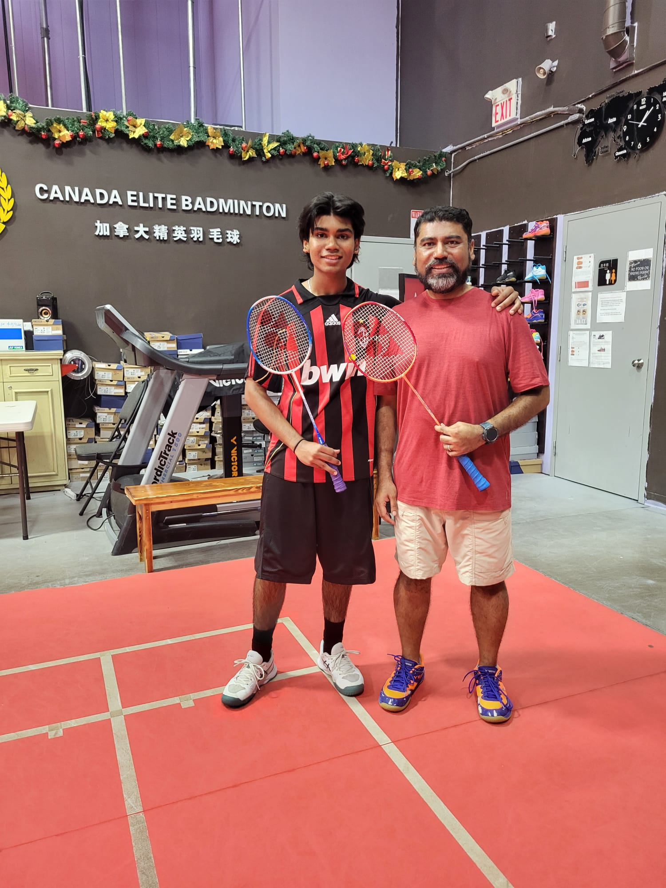
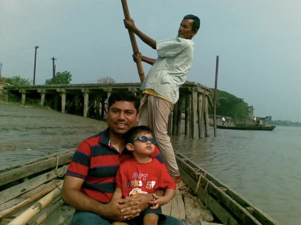
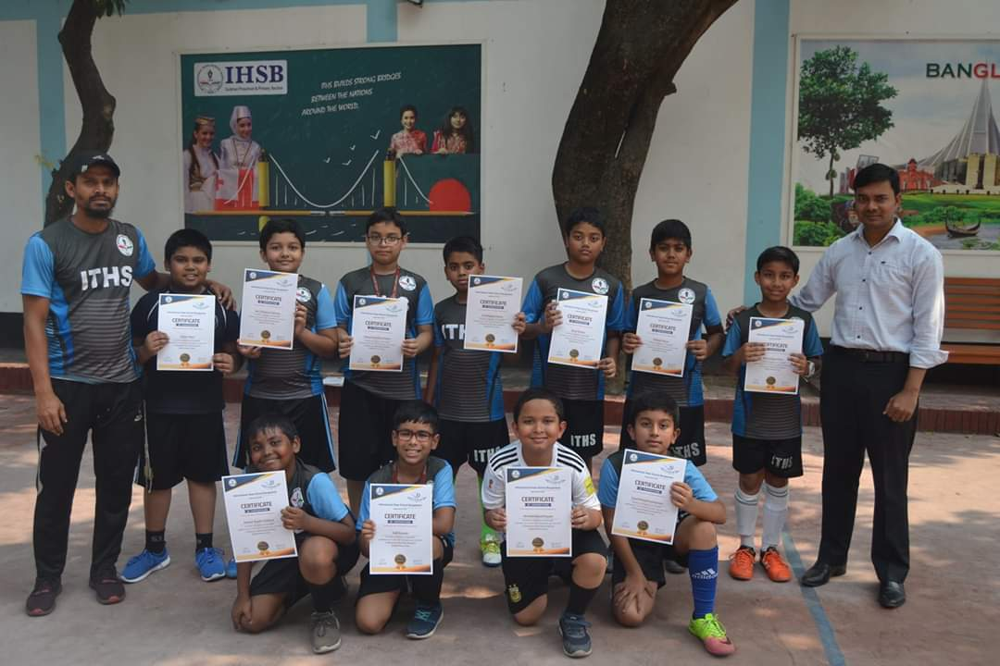
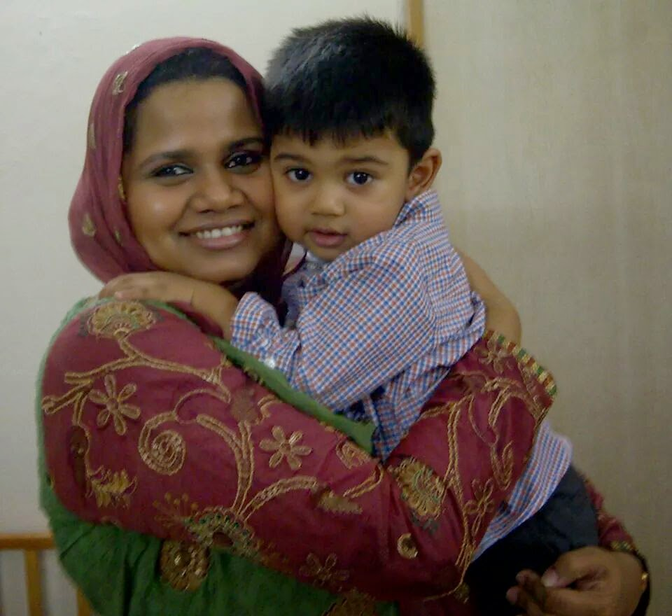
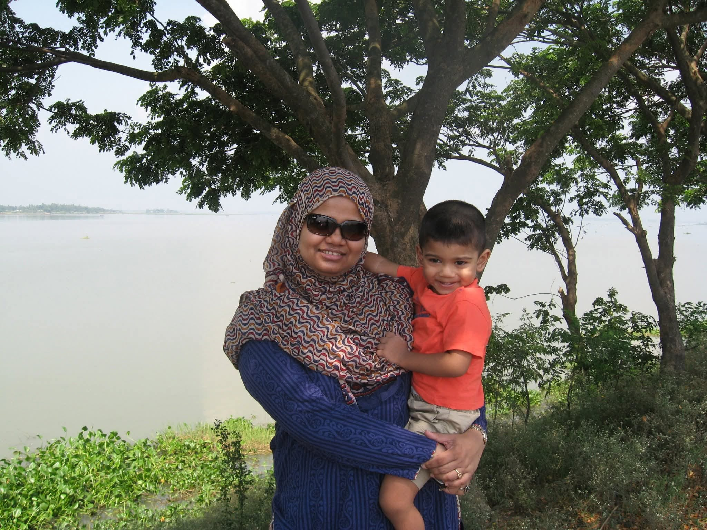
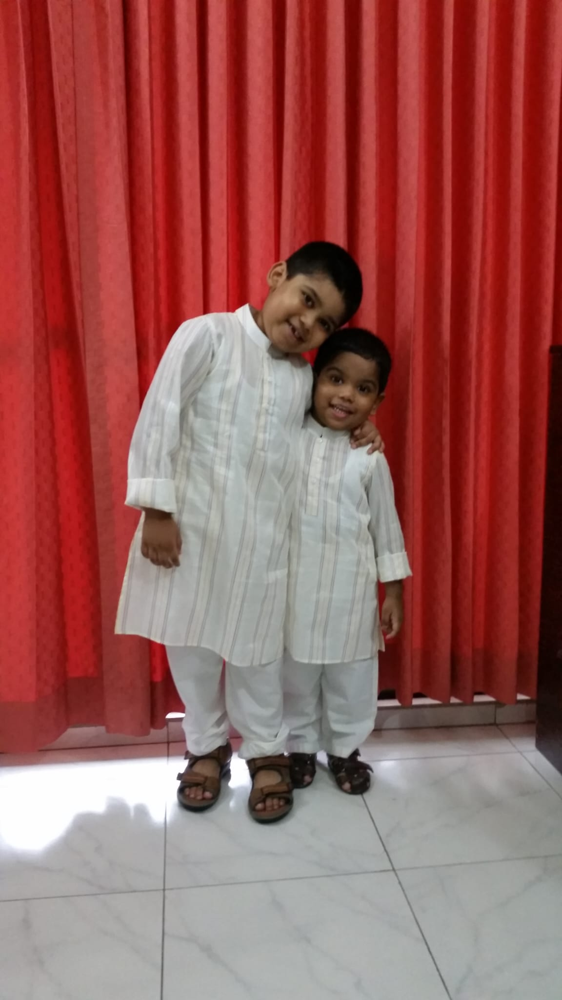

Personal story
About me.
I am Bangladeshi, and a big part of my story is moving from Bangladesh to Canada after living there for thirteen years. It was a huge change, but it shaped the way I learn, adapt, and keep going when things feel unfamiliar.
Who I am
Still learning, still building.
I grew up in Bangladesh, so moving to Canada meant starting over in a lot of ways. I had to adjust to a new school environment, new expectations, and a different culture. At first it was hard, but it also taught me how to be more independent and resilient.
I have always been interested in computers, technology, and gaming. That is one of the reasons I took ICS. I wanted to understand how programs work, how games and apps are made, and how code can turn an idea into something real.

Parts of my story
The things that shaped me.





Values
Curiosity
I am curious about how things work, not just in technology, but also in science, philosophy, and bigger questions about life. That curiosity is one of the reasons I chose to take ICS, because coding lets me explore ideas and understand how things are built.
Ambition
I want to do something meaningful with my future. I do not know the exact path yet, but I want my work to have an impact, solve real problems, and hopefully help the world in some way.
Reflection
I am not just trying to finish school. I am trying to build a future where my ideas can actually matter.
Moving from Bangladesh to Canada changed the way I see growth. It taught me that sometimes you have to restart, adapt, and learn while everything feels unfamiliar. That experience made me more independent, and it also made me think more deeply about who I want to become.
ICS became part of that growth because it showed me a different way to solve problems. Coding is not only about writing lines on a screen. It is about thinking clearly, breaking big problems into smaller parts, testing ideas, and staying patient when something does not work right away.
In the future, I want to study engineering, especially chemical or materials engineering. I am interested in pharmaceuticals and materials because they connect science with real impact. I like the idea of creating something that could improve people’s lives, even in a small way.